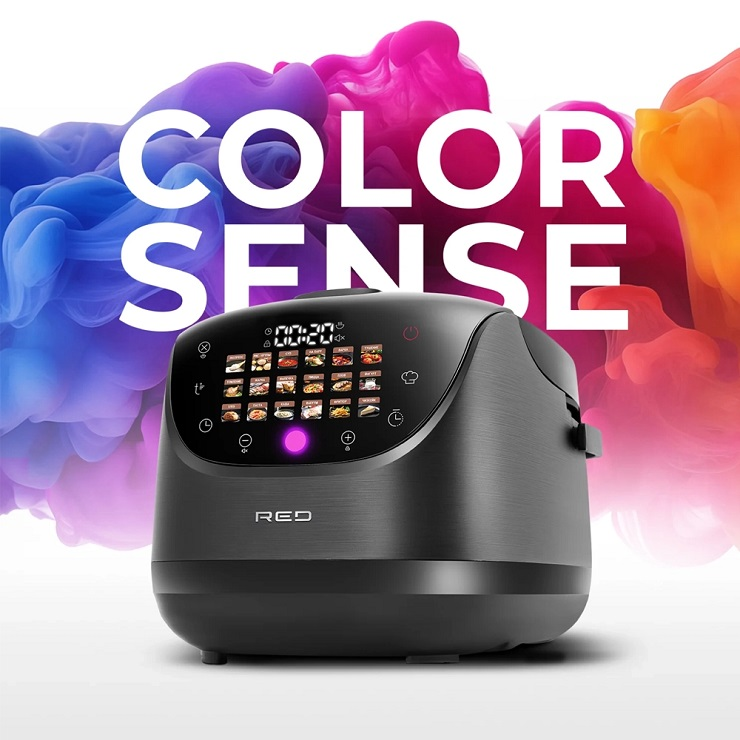

RU
LV
LT
ET
Мультиварка RED COLORSENSE MC200

Мультиварка RED COLORSENSE MC200 — это многофункциональное кухонное устройство, с помощью которого вы сможете автоматически готовить как повседневные, так и праздничные блюда.
RGB индикация: красный — подогрев, оранжевый — приготовление, зелёный — завершено. При отложенном старте — фиолетовый.
Дисплей с сенсорным управлением: полноцветный дисплей, сенсорные кнопки.
Эргономичный дизайн: удобные ручки, мерная шкала, съёмная крышка.
Антипригарное покрытие: Daikin, готовить без масла, легко мыть.
Функции: Автоматический подогрев до 12 ч., Отложенный старт до 24 ч., Мультиповар, Разогрев, Блокировка панели, Отключение звука, RGB индикация.
Программы (19): Быстрое приготовление, Рис/Крупы, Суп, На пару, Варка, Тушение, Томление, Жарка, Выпечка, Пицца, Плов, Йогурт, Хлеб, Паста, Молочная каша, Вакуумирование, Фритюр, Чизкейк, Мультиповар (35–180°C).
Книга рецептов доступна здесь .
Цена: 139.00 EUR
Чайник Colorsense A11E
Чайник Colorsense A11E — 1,7 л, 2000 Вт, быстровскипание, беспроводной, 360° база, защита от выкипания, термостойкая ручка.
Панель сенсорная, 5 режимов подогрева (40–100°C), автоматический подогрев 2 ч, Cool Touch, количество программ: 5.
Цена: 45.00 EUR
Чайник Colorsense A15E
Чайник Colorsense A15E — 1,7 л, 2000 Вт, быстрый нагрев, 360° база, защита, Cool Touch, сенсорная панель, 5 режимов подогрева, автоматический подогрев 2 ч.
Цена: 49.00 EUR
Товары можно заказать здесь .
Контакты
REDMOND магазин
Время работы:
RED COLORSENSE MC200 multivārāmais katls
RED COLORSENSE MC200 multivārāmais katls – daudzfunkcionāla ierīce ikdienas un svētku ēdieniem.
RGB indikācija: sarkans — uzsildīšana, oranžs — gatavošana, zaļš — gatavs, violets — aizkavēts starts.
Sensoru displejs: pilnkrāsu displejs, sensoru pogas.
Ergonomisks dizains: rokturi, mērskala, noņemams vāks.
Pretpiedeguma pārklājums: Daikin, gatavošana bez eļļas, viegli mazgājams.
Funkcijas: Automātiska sildīšana līdz 12 h, Atliktais starts līdz 24 h, Multipavars, Pārtikas uzsildīšana, Vadības paneļa bloķēšana, Skaņas signālu izslēgšana, RGB indikācija.
Programmas (19): Ātrā gatavošana, Rīsi/Putraimi, Zupa, Tvaicēšana, Vārīšana, Sautēšana, Tomēšana, Cepšana, Pica, Plovs, Jogurts, Maize, Pasta, Piena putra, Vakuums, Fritēšana, Siera kūka, Multipavars (35–180°C).
Recepšu grāmata pieejama šeit .
Cena: 129.00 EUR
Tējkanna Colorsense A11E
1,7 l, 2000 W, ātra vārīšana, 360° bāze, automātiska izslēgšanās, karstumizturīga rokturis, Cool Touch, 5 režīmi, 2 h automātiska sildīšana.
Cena: 35.00 EUR
Tējkanna Colorsense A15E
1,7 l, 2000 W, ātra vārīšana, 360° bāze, automātiska izslēgšanās, karstumizturīga rokturis, Cool Touch, 5 režīmi, 2 h automātiska sildīšana.
Cena: 39.00 EUR
Preces var pasūtīt šeit .
Kontakti
REDMOND veikals
Darba laiks:
RED COLORSENSE MC200 daugiafunkcis puodas
RED COLORSENSE MC200 daugiafunkcis puodas – daugiafunkcinis prietaisas kasdieniams ir šventiniams patiekalams.
RGB indikacija: raudona — įkaitinimas, oranžinė — gaminimas, žalia — baigta, violetinė — atidėtas startas.
Jutiklinis ekranas: spalvotas ekranas, jutiklinės mygtukai.
Ergonomiškas dizainas: rankenos, matavimo skalė, nuimamas dangtis.
Nelipni danga: Daikin, gaminti be aliejaus, lengvai plauti.
Funkcijos: Automatinis šildymas iki 12 val., Atidėtas startas iki 24 val., Multipavirimas, Patiekalų pašildymas, Valdymo skydelio blokavimas, Garso signalų išjungimas, RGB indikacija.
Programos (19): Greitas virimas, Ryžiai/Kruopos, Sriuba, Garinimas, Virimas, Troškinimas, Lėtas troškinimas, Kepimas, Pica, Plovas, Jogurtas, Duona, Pasta, Pieniška košė, Vakuumas, Fritūravimas, Sūrio pyragas, Multipavirimas (35–180°C).
Receptų knyga prieinama čia .
Kaina: 129.00 EUR
Virdulys Colorsense A11E
1,7 l, 2000 W, greitas užvirimas, 360° pagrindas, automatinis išsijungimas, karščiui atspari rankena, Cool Touch, 5 režimai, automatinis šildymas 2 val.
Kaina: 35.00 EUR
Virdulys Colorsense A15E
1,7 l, 2000 W, greitas užvirimas, 360° pagrindas, automatinis išsijungimas, karščiui atspari rankena, Cool Touch, 5 režimai, automatinis šildymas 2 val.
Kaina: 39.00 EUR
Kontaktai:
REDMOND parduotuvė
RED COLORSENSE MC200 multikeetja
RED COLORSENSE MC200 multikeetja – multifunktsionaalne köögiseade igapäevaseks ja pidulikuks toiduvalmistamiseks.
RGB-indikaator: punane — eelkuumutamine, oranž — valmistamine, roheline — lõpetatud, lilla — viitstart.
Puutetundlik ekraan: täisvärviline ekraan, puutenuppudega juhtimine.
Ergonoomiline disain: mugavad käepidemed, mõõteskaala, eemaldatav kaas.
Mittekleepuv kate: Daikin, toitu saab valmistada ilma õlita, kerge puhastada.
Funktsioonid: automaatne soojendamine kuni 12 tundi, viitstart kuni 24 tundi, Multipott, toidu soojendamine, juhtpaneeli lukustus, helisignaalide väljalülitamine, RGB-indikaator.
Programmid (19): Kiirkeetmine, Riis/Tangud, Supp, Aurutamine, Keetmine, Hautamine, Aeglane hautamine, Küpsetamine, Pica, Plov, Jogurt, Leib, Pasta, Piimapuder, Vaakumkeetmine, Fritüürimine, Juustukook, Multipott (35–180°C).
Retseptiraamat saadaval siin .
Hind: 129.00 EUR
Veekeetja Colorsense A11E
1,7 l, 2000 W, kiire keetmine, 360° alus, automaatne väljalülitus, kuumakindel käepide, Cool Touch, 5 režiimi, automaatne soojas hoidmine 2 h.
Hind: 35.00 EUR
Veekeetja Colorsense A15E
1,7 l, 2000 W, kiire keetmine, 360° alus, automaatne väljalülitus, kuumakindel käepide, Cool Touch, 5 režiimi, automaatne soojas hoidmine 2 h.
Hind: 39.00 EUR
Kontaktid:
REDMOND pood